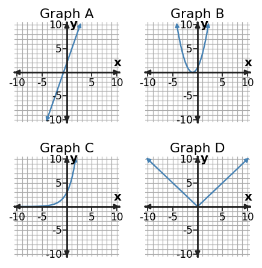

Function Families
| x | y |
|---|---|
| 0 | 2 |
| 1 | 5 |
| 2 | 8 |
| 3 | 11 |
| x | y |
|---|---|
| 0 | 1 |
| 1 | 4 |
| 2 | 9 |
| 3 | 16 |
| x | y |
|---|---|
| 0 | 3 |
| 1 | 6 |
| 2 | 12 |
| 3 | 24 |
| x | y |
|---|---|
| -2 | 2 |
| -1 | 1 |
| 0 | 0 |
| 1 | 1 |
| 2 | 2 |

Analyze four tables for first differences, second differences, or ratios.
Pair each table with one equation and one graph panel.
Label the strongest piece of evidence for linear, quadratic, exponential, and absolute value families.
Challenge a classification that uses graph shape only.
Create one new small table that belongs to an assigned family.
Why is “the graph is curved” weak evidence for choosing a function family?